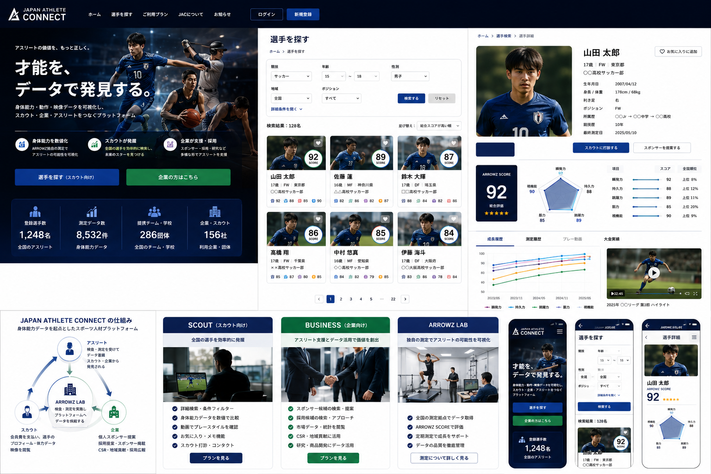

ATHLETE
測定を受け、自分の身体能力と成長を可視化。競技実績以外の強みでもアピール。
SPORTS SCIENCE × ATHLETE DATA
競技実績だけでは見えない身体能力を可視化。
アスリート、スカウト、企業をスポーツ科学でつなぐ。

CONCEPT
ARROWZの測定データを蓄積し、選手の価値を身体能力・成長・映像から多面的に可視化。選手とスカウト・企業の新しい接点をつくります。
測定を受け、自分の身体能力と成長を可視化。競技実績以外の強みでもアピール。
競技・年代・地域・身体能力から検索。遠方や無名の選手を効率的に発掘。
スポンサー候補・採用候補の発見と、統計化されたアスリート市場データを活用。
PLATFORM IMAGE
Web上で選手を検索し、プロフィール・身体能力・成長履歴・映像を一元的に確認できるプラットフォームを想定しています。
ARROWZ PHYSICAL DATA
ATHLETE DATABASE
※選手名・数値はプロトタイプ用ダミーデータです。
FOR SCOUT / BUSINESS
全国の選手を条件検索し、身体能力・成長データ・映像から候補を発見。
選手検索を体験 →企業がアスリートを発見し、スポンサー・採用候補としてアプローチ。
競技・年代・地域別の身体能力データを商品企画・研究・マーケティングへ。
REVENUE MODEL
ARROWZ LAB・提携拠点での測定。継続測定により成長履歴を蓄積。
大学・高校・プロ・実業団等が検索・比較・閲覧機能を利用。
市場データ・スポンサー候補・採用候補を企業が閲覧。